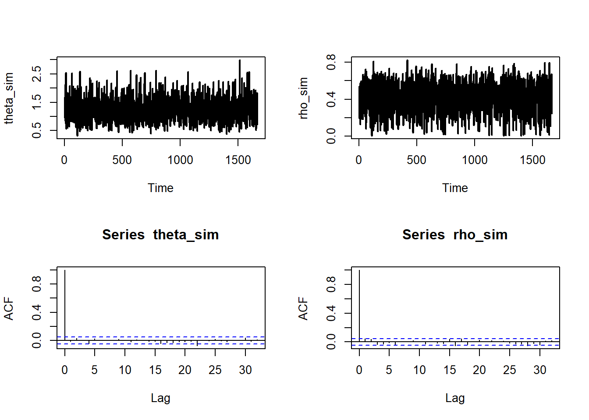

fur <- c(0, 0 ,1,
0, 0, 1, 0, 0, 1, 0, 0, 2, 2,
0, 0, 1, 1, 3, 4, 0, 0, 2, 0,
0, 0, 0)8 Misturas de distribuições
Dizemos que \(X\sim f(.)\) é uma mistura se existe uma variável \(Z\) tal que
\[f(x)=\int f(x|z)f(z)dz.\]
A variável \(Z\) é denominada latente e a função \(f(x,z)\) é denominada modelo aumentado.
Seja \((X_1,Z_1),\ldots,(X_n,Y_n)\) uma amostra aleatória do modelo aumentado \(f(x,z|\theta)\) e seja \(\pi(\theta)\) a priori para \(\theta\). Existem situações nas quais é mais fácil simular do modelo \[\pi(\theta,\boldsymbol{z}|\boldsymbol{x})\varpropto f(\boldsymbol{x},\boldsymbol{z}|\theta)\pi(\theta).\]
A distribuição de \(\theta\) (ou \(\boldsymbol{Z}\)) dado as demais variáveis do modelo é denominada condicional completa, que neste problema são:
\[f(\boldsymbol{z}|\boldsymbol{x},\theta)\] e \[\pi(\theta|\boldsymbol{z},\boldsymbol{x},\theta)\]
Em particular, se é fácil simular das condicionais completas, podemos utilizar o Amostrador de Gibbs, que consiste no seguinte algoritmo:
Amostrador de Gibbs
Inicie a cadeia com fazendo \(j=0\) e escolhendo \(\theta^{(0)}\)
No \(j\)-ésimo passo:
Simule \(\boldsymbol{z^{(j)}}\sim f(\boldsymbol{z}|\boldsymbol{x},\theta^{(j-1)})\)
Simule \(\theta^{(j)}\sim \pi(\theta|\boldsymbol{z},\boldsymbol{x})\)
O Amostrador de Gibbs é uma cadeia de Markov cuja distribuição estacionária é \(\pi(\theta,\boldsymbol{z}|\boldsymbol{x})\)
8.1 Modelos com inflação de zeros
Quando são observados mais zeros do que o esperado pelo modelo de contagem assumido para a verossimilhança, é usual considerar um modelo com inflação de zeros. Nesse tipo de modelo, assumimos que existe uma variável \(Z|p\sim\hbox{Bernoulli}(\rho)\) tal que:
\[X=\left\{\begin{array}{ll}0, & \hbox{se }Z=1\ \\ Y,&\hbox{se }Z=0\end{array}\right.\] onde \(Y\sim h(.|\theta)\) é o modelo de contagem. Apenas \(X\) é observado e, como
\[\begin{align}P(X=0|\theta,p)&=P(X=0|Z=0,\theta)P(Z=0|\rho)+P(X=0|Z=1,\theta)P(Z=1|\rho)\\&=(1-\rho)h(0|\theta)+\rho\end{align}\] a probabilidade de observar um zero está entre \(h(0|\theta)\) e 1, o que caracteriza a inflação.
Agora, considere um modelo inflacionado de zeros aumentado:
\[f(x,z|\theta,\rho)=f(x|z,\theta)f(z|\rho)=f(x|z,\theta)\rho^z(1-\rho)^{1-z}.\] Note que
\[f(x|z,\theta)=\left\{ \begin{array}{ll} h(x|\theta),&\hbox{ se }z=0,\\ I(x=0),&\hbox{ se }z=1\\ \end{array}\right.\] logo, a distribuição conjunta \(f(x,z|\theta,\rho)\) é dada por
\[\begin{array}{c|cc}\hline & x=0 & \hbox{qualquer }x> 0 \\ \hline z=0 & h(0|\theta)(1-\rho) & h(x|\theta)(1-\rho) \\ z=1 & \rho & 0 \\ \hline \end{array} \] Então,
\[\begin{align} \prod_{i=1}^n f(x_i,z_i|\theta,\rho)&=\prod_{i=1}^n [h(0|\theta)(1-\rho)]^{I(x_i=0,z_i=0)}[h(x_i|\theta)(1-\rho)]^{I(x_i>0,z_i=0)}\rho^{I(x_i=0,z_i=1)}\\ &=\prod_{i=1}^n [h(x_i|\theta)(1-\rho)]^{I(z_i=0)}\rho^{I(x_i=0,z_i=1)}\\ &=\prod_{i=1}^n(1-\rho)^{I(z_i=0)}\rho^{I(x_i=0,z_i=1)}\prod_{i=1}^n [h(x_i|\theta)]^{I(z_i=0)}\end{align}\] e, notando que \(I(z_i=0)=1-z_i,\)
\[\begin{align} \prod_{i=1}^n f(x_i,z_i|\theta,\rho)&= (1-\rho)^{n-\sum_{i=1}^n z_i}\rho^{\sum_{i=1}^n z_iI(x_i=0)}\prod_{i=1}^n [h(x_i|\theta)]^{1-z_i}\end{align}\]
Considere, a priori, que \(\theta\) e \(\rho\) são independentes. Seja \(\pi(\theta)\) a priori para \(\theta\) e considere que \(\rho\sim\hbox{Beta}(a,b)\). Então, as condicionais completas para \(\theta\) e \(\rho\) são
\[\begin{align} \pi(\theta|\rho,\boldsymbol{z},\boldsymbol{x})&\propto \prod_{i=1}^n h(x_i|\theta)^{1-z_i}\pi(\theta),\\ \pi(\rho|\theta,\boldsymbol{z},\boldsymbol{x})&\propto \rho^{\sum_{i=1}^n z_iI(x_i=0)+a-1}(1-\rho)^{n-\sum_{i=1}^n z_i+b-1},\\ \end{align}\]
Para a condicional completa de \(z_i\), notemos que \[P(Z_i=1|x_i>0)=\frac{P(Z_i=1,X_i>0)}{P(X_i>0)}=0,\] e que
\[P(Z_i=z|x_i=0)= \left\{\begin{array}{ll}\frac{P(Z_i=0,X_i=0)}{P(X_i=0)}=\frac{h(0|\theta)(1-\rho)}{\rho+(1-\rho)h(0|\theta)},&,z=0\\ \frac{P(Z_i=1,X_i=0)}{P(X_i=0)}=\frac{\rho}{\rho+(1-\rho)h(0|\theta)},&z=1\end{array}\right.,\] logo \[\pi(z_i|\theta,\rho,\boldsymbol{x},\boldsymbol{z}_{(-i)})=\left\{\begin{array}{ll}\hbox{Bernoulli}\left( \frac{\rho}{\rho+(1-\rho)h(0|\theta)}\right),&\hbox{ se }x_i=0\\ I(z_i=0),&\hbox{ se } x_i>0\\ \end{array}\right.\]
Portanto, um amostrador de Gibbs para um modelo inflacionado de zeros é
Amostrador de Gibbs para o modelo inflado de zeros
Faça \(j=0\) e dê os valores iniciais \(\theta^{(0)}\) e \(\rho^{(0)}\).
No \(j\)-ésimo passo:
Para \(i\in\{1,\ldots,n\}\), se \(x_i>0\) faça \(z_i=0\). Senão, simule \[z_i^{(j)}\sim \hbox{Bernoulli}\left(\frac{\rho^{(j-1)}}{\rho^{(j-1)}+(1-\rho^{(j-1)})h(x_i|\theta^{(j-1)})}\right)\]
Simule \(\rho^{(j)}\sim\hbox{Beta}(a+\sum_{i=1}^n z_i^{(j)}I(x_i=0),b+n-\sum_{i=1}^n z_i^{(j)})\)
Simule \(\theta^{(j)}\) de \[\pi(\theta|\rho^{(j)},\boldsymbol{z}^{(j)},\boldsymbol{x})\propto \prod_{i=1}^n h(x_i|\theta^{(j)})^{1-z_i^{(j)}}\pi(\theta^{(j)}).\]
Exemplo - A Poisson inflada de zeros
Neste exemplo, vamos considerar que a distribuição da contagem é Poisson(\(\theta\)) e que \(\theta\sim\hbox{Gama}(r,s)\). Então,
\[\begin{align} \pi(\theta|\rho^{(j)},\boldsymbol{z}^{(j)},\boldsymbol{x})&\propto \prod_{i=1}^{n} h(x_{i} | \theta )^{ 1-z_{i}^{(j)} }\pi(\theta)= \prod_{i=1}^{n} \left[\frac{ e^{-\theta}\theta^{x_i} }{x_i!}\right]^{1-z_{i}^{(j)}}\frac{s^r}{\Gamma(r)}\theta^{r-1} e^{-s\theta}\\&\propto \theta^{\sum_{i=1}^n x_i(1-z_i^{(j)})+r-1}e^{-(n-\sum_{i=1}^n z_i^{(j)}+s)\theta} \end{align},\]
ou seja, \(\theta^{(j)}|\rho^{(j)},\boldsymbol{z}^{(j)},\boldsymbol{x}\sim\hbox{Gama}(\sum_{i=1}^n x_i(1-z_i^{(j)})+r,n-\sum_{i=1}^n z_i^{(j)}+s)\)
Os dados abaixo representam o número anual de furacões atlânticos grandes (categoria 4 ou 5) entre 1987 e 2012, nos Estados Unidos.
A frequência relativa de zeros é 0,58. Considerando o modelo Poisson\((\theta)\) com \(\pi(\theta)\propto \theta^{-1}\), temos que
r1 <- sum(fur)
s1 <- length(fur)
plot(table(fur)/s1, type= 'p', xlab='No. anual de mortes pod fur', ylab = 'Probabilidade', col = 'cyan3', pch=16)
lines(0:4,table(fur)/s1, col = 'cyan3')
points(0:4, dnbinom(0:4, size = r1, prob = s1/(1+s1)), pch=16, col = 'brown')
lines(0:4, dnbinom(0:4, size = r1, prob = s1/(1+s1)), col = 'brown')
legend('bottomleft',c('Freq. relativa','Pred. post. Poisson'), fill=c('cyan3','brown'), bty='n')
# hiperparâmetros para rho
a = b = 1
# hiperparâmetros para theta
r=.1
s=.1
# tamanho da amostra
n <- length(fur)
# valores iniciais da cadeia
theta <- mean(fur)
rho <- mean(fur == 0)
# amostrador de Gibbs
B <- 50000
for(i in 1:B){
# simulando z
z <- NULL
prob <- rho[i]/ ( (1-rho[i])*dpois(0,theta[i]) + rho[i])
for(j in 1:n){
if(fur[j] >0){ z[j] <- 0} else{
z[j] <- rbinom(1,1,prob)
}
}
# simulando rho
rho[i+1] <- rbeta( 1, a + sum( z * (fur == 0)) , n- sum(z)+ b )
# simulando theta
theta[i+1] <- rgamma(1, sum( fur*(1-z) ) + r, n - sum(z) + s)
}Vamos descartar a metade das simulações e usar um thinning igual a 15:
theta_sim <- theta[seq(B/2,B,15)]
rho_sim <- rho[seq(B/2,B,15)]
oo <- par(mfrow=c(2,2))
ts.plot(theta_sim, lwd = 2)
ts.plot(rho_sim, lwd = 2)
acf(theta_sim)
acf(rho_sim)
Vamos estimar as probabilidade de ocorrerem \(k\) mortes via preditiva posteriori:
# tamanho do vetor simulado
Bs <- length(theta_sim)
x_til <- array( NA_real_, c(Bs,n))
for(j in 1:Bs){
z <- rbinom( n, 1, rho_sim[j])
x_til[j,] <- (1-z)*rpois(n, theta_sim[j])
}
# probabilidades estimadas via ZIP
p_zip <- prop.table(table(x_til))
p_zipx_til
0 1 2 3 4 5
6.110239e-01 1.997600e-01 1.149001e-01 4.870564e-02 1.735038e-02 5.745005e-03
6 7 8 9
1.776568e-03 5.768077e-04 1.153615e-04 4.614462e-05 Abaixo mostramos as probabilidades preditas do modelo ZIP, do modelo Poisson a e frequência relativa.
r1 <- sum(fur)
s1 <- length(fur)
plot(table(fur)/s1, type= 'p', xlab='No. anual de mortes pod fur', ylab = 'Probabilidade', col = 'cyan3', pch=16)
lines(0:4,table(fur)/s1, col = 'cyan3')
points(0:4, dnbinom(0:4, size = r1, prob = s1/(1+s1)), pch=16, col = 'brown')
lines(0:4, dnbinom(0:4, size = r1, prob = s1/(1+s1)), col = 'brown')
points(names(p_zip),p_zip, pch=16,col = 'magenta')
lines(names(p_zip),p_zip,col = 'magenta')
legend('bottomleft',c('Freq. relativa','Pred. post. Poisson', 'Pred. post. ZIP'), fill=c('cyan3','brown', 'magenta'), bty='n')
8.2 Exercício
Abaixo, segue o número anual de tornados em Lafayette Parish, Louisiana, entre 1950 e 2012.
tor <- c(0, 0,0, 1, 0, 0, 0, 1, 0, 0,
1, 0, 0, 0, 1, 1, 0, 0, 0, 2,
0, 0, 0, 0, 1, 3, 0, 2, 1, 0,
1, 0, 0, 1, 0, 1, 0, 0, 2, 1,
0, 1, 2, 0, 0, 1, 0, 1, 2, 0,
0, 0, 3, 0, 2, 0, 1, 1, 3, 0,
1, 1, 1)Ajuste o modelo Poisson.
Ajuste o modelo Poisson inflado de zeros.